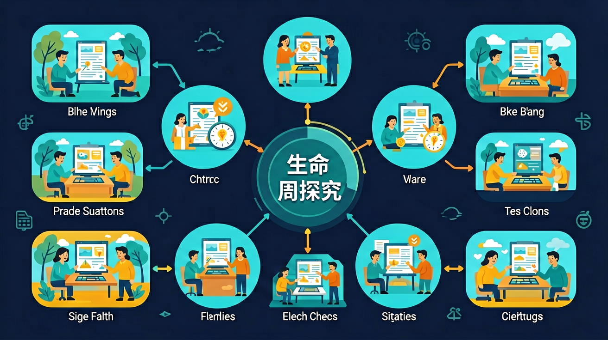

你见过毛毛虫变蝴蝶、种子长成大树 · 但还没系统探究过：生命为什么会有周期？周期有什么规律？ · 通过观察、提问、实验、归纳，我们来探究不同生物的生命周期规律
你已经学过植物生长，具备继续探索的底座；在日常生活中，你也早就接触过与「生命周期探究」相关的现象。
但当问题换了一个情境出现——需要你解释原因、做出判断或解决实际任务时，仅凭零散的旧知识就很容易卡住。
所以本课用一个贯穿的情境任务，带你把「生命周期探究」拆成可操作的步骤：先看懂它，再动手试，最后用练习和迁移把它变成自己的能力。
识别并描述至少两种生物的生命周期阶段
设计一个关于生命周期的简单观察实验
比较不同生物生命周期的异同
蝴蝶的生命周期中，哪个阶段是完全不动的？
已知：你见过毛毛虫变蝴蝶、种子长成大树
问题：但还没系统探究过：生命为什么会有周期？周期有什么规律？
解法：通过观察、提问、实验、归纳，我们来探究不同生物的生命周期规律
👀 看见它：在生活的真实场景里，「生命周期探究」长什么样？先找到一两个能摸得着的例子。
🧩 拆开它：它由哪几个关键部分组成？每个部分起什么作用、背后的原理是什么？
🚀 迁移它：换一个情境，这个结论还成立吗？试着解释一个课本之外的新例子。
类比记忆：把「生命周期探究」想象成你熟悉的一件东西或一个场景——就像给新知识找一个老朋友。写下你的类比，交给 AI 学伴帮你检查贴不贴切。
口诀挑战：试着把本课最容易忘的三个要点缩成一句不超过 15 字的口诀，顺口、好记、不漏关键条件。
把你对「生命周期探究」的理解画下来：标注关键词、画出结构关系，再对照讲解检查。
探究的第一步应该是？
有疑问？点击提问！
生命周期是指生物从出生到死亡所经历的一系列阶段。每个生物都有独特的生命周期，例如蝴蝶会经历卵、幼虫、蛹和成虫四个阶段。人类也有生命周期，从婴儿、儿童、青少年、成年到老年。生命周期不仅适用于生物，也可以用于描述非生物的变化过程，比如产品的生命周期包括设计、生产、使用和废弃。理解生命周期有助于我们认识生物的成长规律和自然界的循环。
植物的生命周期通常包括种子、幼苗、成熟植物、开花、结果和种子传播等阶段。以向日葵为例，种子在土壤中发芽后长出幼苗，逐渐长高并展开叶子，最终开花结籽。有些植物是一年生植物，如玉米，它们在一年内完成生命周期；而多年生植物如苹果树可以存活多年，每年开花结果。植物的生命周期受到光照、水分和温度等环境因素的影响。通过观察植物的生命周期，我们可以了解植物的生长需求和繁殖方式。
昆虫的生命周期主要有两种类型：完全变态和不完全变态。完全变态的昆虫如蝴蝶和蜜蜂，经历卵、幼虫、蛹和成虫四个截然不同的阶段。不完全变态的昆虫如蝗虫和蟑螂，则经历卵、若虫和成虫三个阶段，若虫与成虫形态相似。以蚊子为例，它们在水中的卵孵化成幼虫（孑孓），经过几次蜕皮后变成蛹，最后羽化为成虫。了解昆虫的生命周期有助于我们控制害虫和利用益虫。
先独立作答，再点选项查看对错与错因。
蝴蝶生命周期中，哪个阶段不进食？
下列哪项是蝴蝶幼虫的主要特征？
蝴蝶成虫的主要活动是什么？
蝴蝶从幼虫到成虫的过程称为____
答案：变态
蝴蝶经历完全变态发育
蝴蝶卵孵化后，最先出现的阶段是____
答案：幼虫
蝴蝶生命周期从卵开始，孵化后进入幼虫阶段
关于蝴蝶生命周期，下列说法正确的是
观察并记录蝴蝶园中蝴蝶的生长变化